Untersuchungspanel
LAB_PANEL · Tabelle mit 2 Achsen: Parameter × Eingabespalten
- 3.1Gesamtaufbau des Tabs „Typeinstellungen“
- 3.2Parameter — Aufbau der Karte
- 3.3Parameter hinzufügen
- 3.4Fertig erstellte Parameter
- 3.5Eingabespalten
- 3.6Standardpanel laden
- 3.7Automatische Bewertung nach Normalbereich — drei Slots festlegen
- 3.8Automatische Bewertung nach Normalbereich — Bewertungswert-Zuordnung und Speichern
Was ist ein Untersuchungspanel?
- 1.1Feld hinzufügen und Aufbau des Eigenschaftsbereichs
1.1Feld hinzufügen und Aufbau des Eigenschaftsbereichs
Überblick
Ein Untersuchungspanel (LAB_PANEL) ist eine Tabelle mit den zwei Achsen Parameter × Eingabespalten. Die Zeilen sind die Parameter (Blutzucker · Leukozyten …), die Spalten sind die Werte, die für jeden Parameter gleich erfasst werden (Testwert · Bewertung · Klinische Relevanz). Der größte Unterschied zu Tabelle (Tabellentyp) · Feldgruppe: Direkt nach dem Hinzufügen ist bereits ein verwendbarer Aufbau enthalten — andere Container zeigen nur einen leeren Hinweis, das Untersuchungspanel wird dagegen mit einem Parameter Blutzucker und drei Spalten bereits befüllt erstellt.
Bildschirmbeschreibung
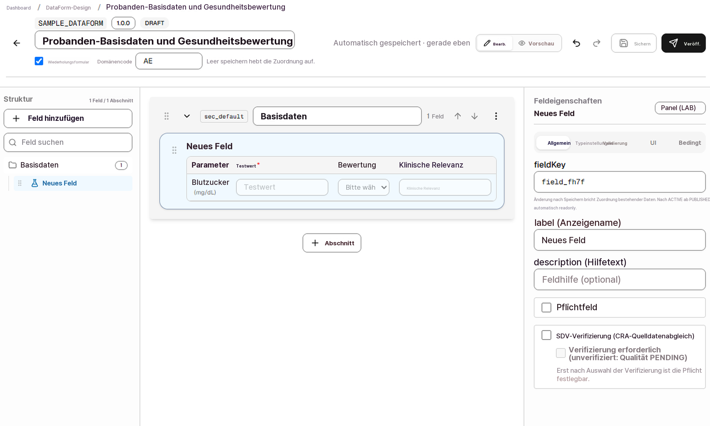
[+ Feld hinzufügen] — Wenn Sie hier den Typ festlegen, wird das Feld erstellt.
Im Strukturbaum wird ein neues Feld hinzugefügt. Das Symbol hat die Form eines Reagenzglases.
Auf dem WYSIWYG-Canvas ist bereits eine Tabelle gezeichnet — eine Zeile Blutzucker (mg/dL), die Spalten sind Parameter · Testwert* · Bewertung · Klinische Relevanz. Verwenden Sie diesen Aufbau unverändert oder passen Sie ihn im Tab „Typeinstellungen“ an. Kap. 3
fieldKey — der Schlüssel, unter dem die gesamte Tabelle gespeichert wird. Er wird nicht für jeden Parameter oder jede Spalte separat angelegt. 2.1
label (Anzeigename) · description (Hilfetext) — Name und ergänzende Beschreibung, die über und unter der Tabelle angezeigt werden. 2.1
Pflichtfeld — wird in 2.2 behandelt.
SDV-Verifizierung — wird in 2.3 behandelt.
Typ-Badge „Untersuchungspanel (LAB)“ — der Typ des ausgewählten Felds. Nach dem Hinzufügen kann er nicht geändert werden.
5 Eigenschafts-Tabs — Allgemein · Typeinstellungen · Validierung · UI · Bedingt. Die Kapitel 2–6 dieses Handbuchs entsprechen den einzelnen Tabs.
Unter SDV ist der Bereich leer. AE-Bedeutungsrolle und „Nicht gemessen“ zulassen, die es bei anderen Typen gibt, werden beim Untersuchungspanel gar nicht angezeigt — weil der Wert aus mehreren Zeilen besteht, sind diese beiden Funktionen nicht anwendbar. 7.2
Zu beachten
Unbedingt prüfen Datenschäden · Formular nicht abschließbar
- • Der Standardaufbau ist ein Beispiel, kein Standard. Der eine Parameter „Blutzucker“ ist ein seed, der nur die Form zeigen soll — ersetzen Sie ihn unbedingt durch die Parameter, die tatsächlich erfasst werden. 3.3 · 3.4
- • ⛔ Erfasser können keine Zeilen hinzufügen. Anders als bei Tabelle (Tabellentyp) sind die Zeilen auf die vom Ersteller festgelegten Parameter fixiert — nehmen Sie alle zu erfassenden Parameter vollständig auf. 3.4 · 7.1
- • Der Typ kann nach dem Hinzufügen nicht geändert werden, und nach der Veröffentlichung (PUBLISH) kann die Struktur selbst nicht mehr geändert werden. Haben Sie falsch gewählt, löschen Sie das Feld und fügen Sie es erneut hinzu.
Leicht missverständliches Verhalten
- • Normalbereiche werden nicht in diesem Bildschirm eingetragen. Da sie je nach Einrichtung · Geschlecht · Alter verschieden sind, werden sie separat im Bildschirm „LAB-Normalbereich“ im linken Menü erstellt. 3.2 · 3.7
Tab „Allgemein“ — Name · Pflicht · Verifizierung
- 2.1fieldKey · Anzeigename · Hilfetext
- 2.2Pflichtfeld
- 2.3SDV-Verifizierung (CRA-Quelldatenabgleich)
2.1fieldKey · Anzeigename · Hilfetext
Überblick
Bereich, in dem Sie den Namen der Tabelle festlegen. Speicherschlüssel (fieldKey) und angezeigter Name (label) sind verschiedene Werte, und der Zeitpunkt, bis zu dem sie geändert werden dürfen, ist unterschiedlich. Beim Untersuchungspanel muss erkennbar sein, welche Untersuchung mit welcher Blutentnahme gemeint ist; geben Sie den Anzeigenamen daher konkret an.
Bildschirmbeschreibung
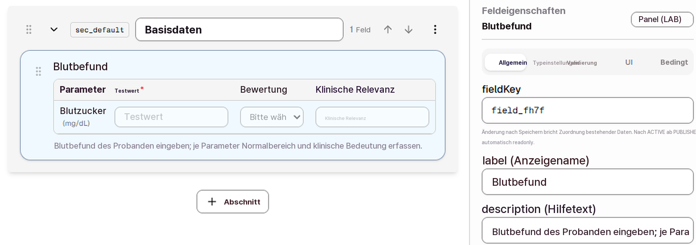
label (Anzeigename) — Geben Sie den Titel ein, der über der Tabelle angezeigt wird. In der Aufnahme: Blutbefund.
Er erscheint als Tabellentitel auf dem Canvas. Er liegt auf einer anderen Ebene als die Namen der Parameter oder der Spalten — diese beiden werden separat im Tab „Typeinstellungen“ festgelegt. 3.2 · 3.5
description (Hilfetext) — Geben Sie die ergänzende Beschreibung ein, die unter der Tabelle angezeigt wird. Bleibt das Feld leer, wird nichts angezeigt.
Erscheint als graue Schrift unter der Tabelle. In der Aufnahme: „Blutbefund des Probanden eingeben; je Parameter Normalbereich und klinische Bedeutung erfassen.“
fieldKey — der Schlüssel, unter dem die gesamte Tabelle gespeichert wird. Beim Hinzufügen des Felds wird er automatisch vergeben, z. B. field_fh7f; wie der Bildschirmhinweis sagt: „Änderung nach Speichern bricht Zuordnung bestehender Daten“.
Zu beachten
Unbedingt prüfen Datenschäden · Formular nicht abschließbar
- • Nennen Sie den Untersuchungszeitpunkt im Anzeigenamen. Aus „Blutbefund“ allein ist nicht erkennbar, ob es sich um eine Screening- oder eine Folgeuntersuchung handelt — besonders wichtig, wenn dasselbe Formular bei mehreren Visiten verwendet wird.
- • Weisen Sie im Hilfetext darauf hin, wo das Blutentnahmedatum einzutragen ist. Grundsätzlich wird das Untersuchungsdatum nicht in dieser Tabelle, sondern in einem Datumsfeld des Formulars eingetragen; für die automatische Bewertung ist dies zwingend erforderlich. 3.7
- • Ändern Sie den fieldKey nach dem Speichern nicht. Die Verbindung zu bereits eingegebenen Daten bricht ab, und Validierungsregeln 4.3 · bedingte Anzeige Kap. 6 · Festlegungen der automatischen Bewertung 3.7, die auf dieses Feld verweisen, brechen ebenfalls.
Leicht missverständliches Verhalten
- • Der Anzeigename (label) kann jederzeit geändert werden. Gespeicherte Werte sind davon nicht betroffen.
2.2Pflichtfeld
Überblick
Hier legen Sie fest, ob diese Tabelle ausgefüllt sein muss, damit das Formular abgeschlossen werden kann. Das Untersuchungspanel hat eine Besonderheit, die andere Container nicht haben — Zeilen, die gar nicht berührt wurden, gelten nicht als unvollständig. Dadurch kann eine Situation, in der nur ein Teil der Untersuchungen durchgeführt wurde, unverändert erfasst werden.
Bildschirmbeschreibung
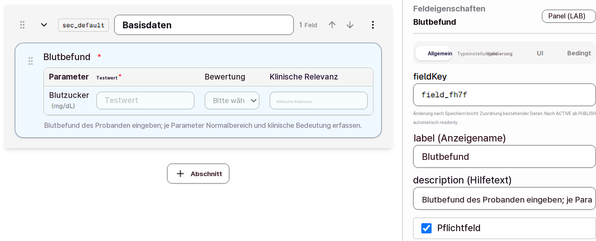
*Pflichtfeld — Wenn aktiviert, wird diese Tabelle zum Pflichtfeld. Gibt es keine einzige tatsächlich ausgefüllte Zeile, kann das Formular nicht abgeschlossen werden.
Auf dem Canvas erscheint rechts neben dem Tabellentitel ein rotes *. Die Sterne an den einzelnen Spalten werden separat in 3.5 festgelegt.
label · description — die in 2.1 eingegebenen Werte werden unverändert angezeigt.
Zu beachten
Unbedingt prüfen Datenschäden · Formular nicht abschließbar
- • ⛔ Jede Zeile, in der auch nur eine Zelle berührt wurde, wird vollständig geprüft. Wird nur der Testwert eingetragen und eine Pflichtspalte leer gelassen, bleibt diese Zeile unvollständig — lassen Sie Zeilen, die Sie nicht verwenden, ganz ohne Eingabe. 3.5
- • ⛔ Es gibt keine Möglichkeit, „nicht untersucht“ anzugeben. Da „Nicht gemessen“ bei diesem Typ nicht aktiviert werden kann, stellen Sie, wenn die Durchführung dokumentiert werden muss, eine Ja/Nein-Frage voran und verknüpfen Sie die Tabelle per Bedingung, oder hinterlassen Sie eine Notiz in einer Nur-Anzeige-Spalte. 3.5 · Kap. 6 · 7.2
Leicht missverständliches Verhalten
- • Zeilen, in denen alle Spalten leer sind, werden nicht geprüft. Wurden von sieben Parametern nur drei durchgeführt, wird das Formular auch abgeschlossen, wenn die übrigen vier Zeilen leer bleiben — da die Zeilen beim Untersuchungspanel vorab angelegt sind, ist diese Besonderheit nötig. 3.6
- • Ausgeblendete Felder sind von der Pflichtprüfung ausgenommen. Solange ein Feld durch bedingte Anzeige Kap. 6 verborgen ist, wird das Formular auch bei einem Pflichtfeld im leeren Zustand abgeschlossen.
2.3SDV-Verifizierung (CRA-Quelldatenabgleich)
Überblick
SDV (Source Data Verification) ist das Verfahren, bei dem der Monitor (CRA) eingegebene Werte mit den Quelldaten der Einrichtung abgleicht. Das Untersuchungspanel enthält Daten mit eindeutiger Quelle (Laborbefund) und ist daher der Typ, bei dem SDV den größten Nutzen hat. Diese Einstellung ist bei allen Feldtypen gleich, daher ist auch der Bildschirm unabhängig vom Typ derselbe.
Bildschirmbeschreibung


SDV-Verifizierung (CRA-Quelldatenabgleich) — Wenn aktiviert, wird dieses Feld in die Abgleichliste des CRA aufgenommen. Die Festlegung gilt für die gesamte Tabelle; sie kann nicht für einzelne Parameter oder Spalten getrennt festgelegt werden.
Mit der Aktivierung wird das Unterelement aktiv.
Verifizierung erforderlich (unverifiziert: Qualität PENDING) — kann erst festgelegt werden, nachdem ① aktiviert wurde. Wenn aktiviert, bleibt der Qualitätsstatus der betreffenden Daten auf PENDING, bis der CRA den Abgleich abgeschlossen hat.
Bevor ① aktiviert ist, ist ② ausgegraut und inaktiv. Wie der Bildschirmhinweis sagt: „Erst nach Auswahl der Verifizierung ist die Pflicht festlegbar.“
Zu beachten
Unbedingt prüfen Datenschäden · Formular nicht abschließbar
- • ⛔ Auch Werte mit automatischer Bewertung werden abgeglichen. Eine vom System eingetragene Bewertung ist nur das Ergebnis einer Berechnung mit dem zu diesem Zeitpunkt gültigen Normalbereich und kann von der Bewertung im Laborbefund abweichen — der CRA muss sie mit den Quelldaten abgleichen. 3.7
- • ⛔ Auch die Einheit muss abgeglichen werden. Das System prüft Einheiten nicht — auch wenn ein Wert, den das Labor in
mg/dLliefert, in ein Feld fürmmol/Leingetragen wird, wird er unverändert gespeichert. 3.3
Leicht missverständliches Verhalten
- • Bei einer Wertänderung wird die Verifizierung aufgehoben. Selbst wenn nur eine Zelle einer Zeile korrigiert wird, fällt der Qualitätsstatus der gesamten Tabelle auf PENDING zurück, und der CRA muss erneut abgleichen.
Hinweis
- • Der Qualitätsstatus durchläuft PENDING → VERIFIED → CLEAN. Ist auch nur ein Feld mit Verifizierungspflicht unverifiziert, können die betreffenden Daten nicht CLEAN werden.
Tab „Typeinstellungen“ — Aufbau mit 2 Achsen und automatische Bewertung
- 3.1Gesamtaufbau des Tabs „Typeinstellungen“
- 3.2Parameter — Aufbau der Karte
- 3.3Parameter hinzufügen
- 3.4Fertig erstellte Parameter
- 3.5Eingabespalten
- 3.6Standardpanel laden
- 3.7Automatische Bewertung nach Normalbereich — drei Slots festlegen
- 3.8Automatische Bewertung nach Normalbereich — Bewertungswert-Zuordnung und Speichern
3.1Gesamtaufbau
Überblick
Der umfangreichste Tab beim Untersuchungspanel. Die zwei Achsen werden in verschachtelten Tabs getrennt erstellt — Parameter (Zeilen der Tabelle) und Eingabespalten (Spalten der Tabelle). Darüber kommt Standardpanel laden, darunter Automatische Bewertung nach Normalbereich festlegen, sodass ein Tab vier Blöcke enthält.
Bildschirmbeschreibung
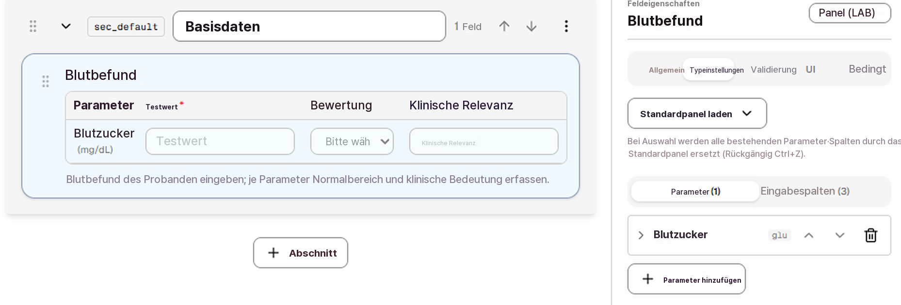
Standardpanel laden — übernimmt häufig verwendete Untersuchungsgruppen auf einmal. 3.6
2 verschachtelte Tabs — Parameter (N) und Eingabespalten (N). Die Zahl in Klammern ist die aktuelle Anzahl. Bei Fehlern im Schlüsselformat erscheint neben dem Tabnamen ein ⚠-Badge mit der Anzahl, sodass auch Fehler im verdeckten Tab erkennbar sind.
Parameterkarte — im eingeklappten Zustand sind nur Anzeigename und itemCode-Badge sichtbar. Mit ∧ ∨ ändern Sie die Reihenfolge, mit 🗑 löschen Sie. 3.2
[+ Parameter hinzufügen] — fügt weitere Parameter hinzu. 3.3
Preset-Hinweis — „Bei Auswahl werden alle bestehenden Parameter·Spalten durch das Standardpanel ersetzt (Rückgängig Ctrl+Z).“ ⚠ Es ist ein Ersetzen, kein Hinzufügen. 3.6
Auf dem Canvas ist der Standardaufbau (Blutzucker 1 Zeile × 3 Spalten) bereits gezeichnet. Änderungen an den Einstellungen werden sofort übernommen. 1.1
Typ-Badge „Untersuchungspanel (LAB)“ — der Typ des Felds, das gerade eingestellt wird.
Zu beachten
Unbedingt prüfen Datenschäden · Formular nicht abschließbar
- • ⛔ Speichern Sie nicht, solange Schlüsselfehler bestehen. itemCode · fieldKey sind snake_case beginnend mit einem Kleinbuchstaben und dürfen nicht doppelt vorkommen. Verschwindet das ⚠ am Tab-Badge nicht, wird das Speichern abgelehnt. 3.3 · 3.5
Leicht missverständliches Verhalten
- • Unter diesem Tab folgt der Block „Automatische Bewertung nach Normalbereich festlegen“. Die Aufnahme zeigt nur den oberen Teil; dieser Block wird separat in 3.7 · 3.8 behandelt.
- • Es gibt kein Element Standardwert (defaultValue). Da die Tabelle aus mehreren Zeilen besteht, gibt es keine Möglichkeit, sie vorab zu befüllen. 7.2
- • Auch ein Element Automatische Berechnung (calculation) gibt es nicht. Die gesamte Tabelle als einen einzigen Zahlenwert zu berechnen, ist nicht möglich — wenn eine Berechnung mit Testwerten nötig ist, legen Sie ein separates Zahlenfeld an. 7.2
3.2Parameter — Aufbau der Karte
Überblick
Ein Parameter ist eine Zeile der Tabelle. Wenn Sie die Karte aufklappen, erscheinen drei Felder — itemCode (Code zum Speichern) · itemLabel (Anzeigename auf dem Bildschirm) · unit (Einheit). ⚠ Es gibt kein Feld für den Normalbereich — da dieser Wert je Einrichtung verschieden ist, wird er in einem eigenen Bildschirm separat erstellt.
Bildschirmbeschreibung
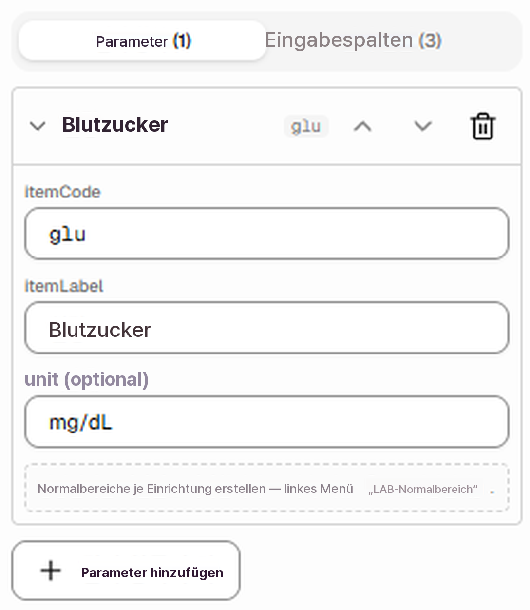
Einklappen · Aufklappen — eingeklappt bleiben nur Anzeigename und itemCode-Badge, sodass auch viele Parameter auf einen Blick überschaubar sind.
itemCode — der Code für Speichern und Export. In der Aufnahme: glu. Er muss snake_case beginnend mit einem Kleinbuchstaben sein und darf innerhalb einer Tabelle nicht doppelt vorkommen.
itemLabel — der Name, der im Zeilenkopf der Tabelle angezeigt wird. In der Aufnahme: Blutzucker.
unit (optional) — die Einheit. In der Aufnahme mg/dL; sie erscheint im Zeilenkopf in kleiner Schrift unter dem Anzeigenamen. ⚠ Dieses Feld erscheint nur, wenn es eine Zahlenspalte gibt. 3.5
[+ Parameter hinzufügen] — fügt weitere Parameter hinzu. 3.3
Verschachtelte Tabs — derzeit ist der Tab Parameter geöffnet. Um Spalten zu bearbeiten, wechseln Sie zum Tab Eingabespalten. 3.5
Hinweis — „Normalbereiche je Einrichtung erstellen — linkes Menü „LAB-Normalbereich““. Normalbereiche werden nicht hier, sondern in diesem Bildschirm je Einrichtung × Geschlecht × Alter erstellt.
Zu beachten
Unbedingt prüfen Datenschäden · Formular nicht abschließbar
- • ⛔ Tragen Sie den Normalbereich nicht in den Anzeigenamen oder das Einheitenfeld ein. Bei einer Angabe wie
Blutzucker (70-110)ist er zwar auf dem Bildschirm sichtbar, die automatische Bewertung liest ihn aber nicht — es ist nur ein langer Name. 3.7 - • ⛔ Geben Sie die Einheit unbedingt an. Da das System Einheiten nicht prüft, wird ohne Angabe nicht abgefangen, wenn der Erfasser einen Wert in einer anderen Einheit einträgt. 2.3
- • Legen Sie den itemCode vor der Veröffentlichung endgültig fest. Wird er nach dem Speichern geändert, bricht nur die Verbindung der Werte dieser Zeile ab — die Tabelle bleibt erhalten und nur eine Zeile ist leer, daher fällt es schwer auf. 2.1
Leicht missverständliches Verhalten
- • Der itemCode wird zum Spaltennamen in den Exportdaten. Wenn Sie Standardcodes folgen (z. B. der
GLUC-Reihe von CDISC LB), lassen sich Daten leichter zusammenführen — die Regel snake_case in Kleinbuchstaben muss jedoch eingehalten werden.
3.3Parameter hinzufügen
Überblick
Wenn Sie einen Parameter hinzufügen, wird eine neue Karte automatisch aufgeklappt erstellt. Alle drei Felder sind leer; die darin sichtbaren glu · Blutzucker · mg/dL sind nur Eingabebeispiele (blasse Schrift) und keine gespeicherten Werte. ⚠ Da die Zeichen dieselben sind wie die Werte des ersten Parameters, kann man leicht annehmen, die Felder seien bereits ausgefüllt; achten Sie darauf.
Bildschirmbeschreibung
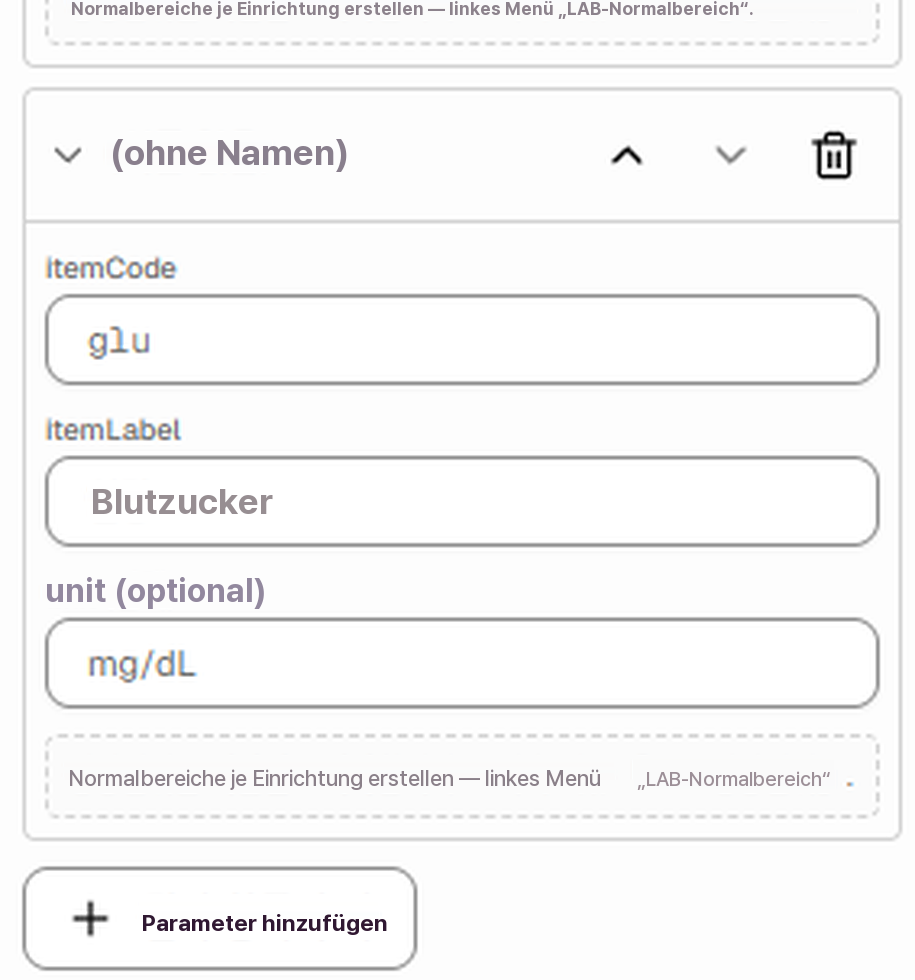
[+ Parameter hinzufügen] — bei jedem Klick kommt eine leere Karte hinzu.
Die neue Karte wird als „(ohne Namen)“ erstellt und automatisch aufgeklappt. Wenn Sie den Anzeigenamen eingeben, erscheint an dieser Stelle der Name.
itemCode — leer. Das blasse glu ist ein Beispieltext.
itemLabel — leer. Das blasse Blutzucker ist ein Beispieltext.
unit (optional) — leer. Das blasse mg/dL ist ein Beispieltext.
Der Hinweis zum Normalbereich erscheint auch auf der neuen Karte gleich — das bedeutet, dass für jeden Parameter separat im Bildschirm „LAB-Normalbereich“ erstellt wird. 3.2
Zu beachten
Unbedingt prüfen Datenschäden · Formular nicht abschließbar
- • ⛔ Lassen Sie keine leeren Karten stehen. itemCode und itemLabel müssen unbedingt ausgefüllt werden; wird leer gespeichert, wird das Speichern abgelehnt. Löschen Sie nicht benötigte Karten mit 🗑. 3.2
- • ⛔ Verwechseln Sie die blasse Schrift nicht mit einem Wert. Beispieltexte werden nicht gespeichert — wenn Sie sie so lassen, entsteht eine Zeile ohne Namen.
Leicht missverständliches Verhalten
- • Ist ein itemCode doppelt, erscheint sofort an dieser Stelle eine Warnung. „Doppelter Schlüssel“ oder „snake_case (Kleinbuchstabe am Anfang) erforderlich“ wird unter dem Feld angezeigt, sodass Sie es vor dem Speichern korrigieren können. 3.1
- • Die Reihenfolge der Parameter ist zugleich die Zeilenreihenfolge der Tabelle. In derselben Reihenfolge wie im Laborbefund fällt dem Erfasser das Übertragen leichter — später können Sie sie mit ∧ ∨ ändern. 3.2
3.4Fertig erstellte Parameter
Überblick
Wenn die drei Felder ausgefüllt sind, wird auf dem Canvas sofort eine Zeile hinzugefügt. Die Aufnahme zeigt „Leukozyten“ als zweiten Parameter — im Zeilenkopf erscheinen Anzeigename und Einheit zusammen, und der Spaltenaufbau (Testwert · Bewertung · Klinische Relevanz) gilt für alle Zeilen gleich.
Bildschirmbeschreibung
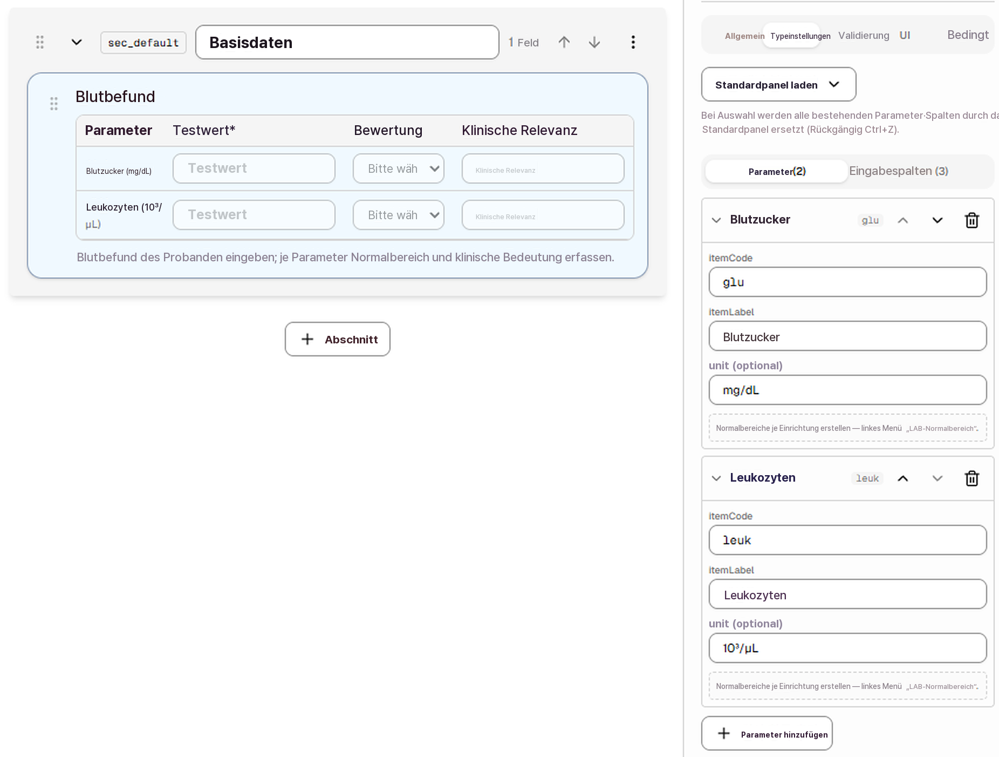
itemCode — leuk wurde eingegeben.
itemLabel — Leukozyten wurde eingegeben.
Auf dem Canvas wird die Zeile „Leukozyten“ hinzugefügt.
unit — 10³/µL wurde eingegeben.
Im Zeilenkopf erscheint die Einheit in kleiner Schrift unter dem Anzeigenamen.
[+ Parameter hinzufügen] — wenn weitere nötig sind, wiederholen Sie denselben Ablauf. 3.3
Parameter (2) — die Zahl im Tabnamen hat sich von 1 auf 2 geändert.
Die Karte des ersten Parameters (Blutzucker) bleibt unverändert. Beim Hinzufügen von Parametern ändern sich bestehende Parameter nicht — vollständig ersetzt wird nur beim Laden eines Standardpanels. 3.6
Zu beachten
Unbedingt prüfen Datenschäden · Formular nicht abschließbar
- • ⛔ Nehmen Sie alle zu erfassenden Parameter vollständig auf. Erfasser können keine Zeilen hinzufügen — Parameter, die hier fehlen, können nicht erfasst werden. 1.1
- • ⛔ Nehmen Sie keine Parameter auf, die nicht durchgeführt werden. Da die Zeilen vorab angelegt werden, ist bei vielen ungenutzten Parametern für den Erfasser schwer erkennbar, was auszufüllen ist. 2.2
Leicht missverständliches Verhalten
- • Klappen Sie die Karten ein, wenn es viele Parameter werden. Im eingeklappten Zustand sind nur Anzeigename und Code sichtbar, sodass sich der Gesamtaufbau leicht überblicken lässt. 3.2
- • Die Einheit ist je Parameter verschieden. Wie in der Aufnahme: Blutzucker
mg/dL, Leukozyten10³/µL— versuchen Sie nicht, sie innerhalb einer Tabelle zu vereinheitlichen.
3.5Eingabespalten
Überblick
Eingabespalten sind die Spalten der Tabelle und gelten für alle Parameter gleich. Der Standardaufbau hat drei Spalten — Testwert · Bewertung · Klinische Relevanz. Jede Spalte ist ein kleines Feld, daher werden Eingabeart · Speicherschlüssel · Name · Pflichtangabe einzeln festgelegt. Anders als Parameter werden Spalten meist unverändert verwendet.
Bildschirmbeschreibung
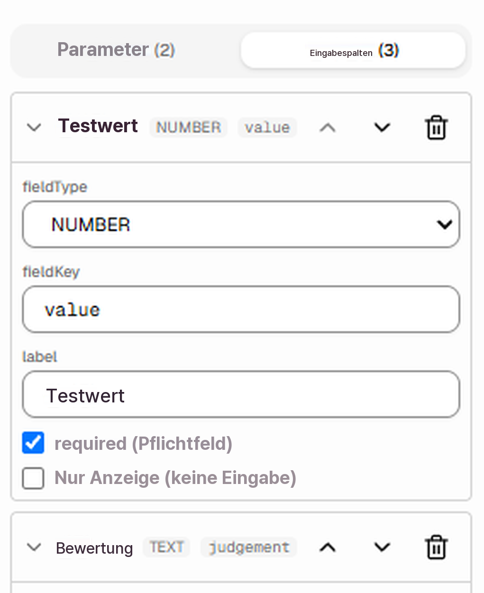
fieldType — die Eingabeart der Spalte. Zur Auswahl stehen 5 Arten — TEXT · NUMBER · SELECT · DATE · BOOLEAN. Der Testwert muss für Zahlenvergleiche und die automatische Bewertung unbedingt NUMBER sein. 3.7
fieldKey — der Speicherschlüssel der Spalte. In der Aufnahme value; die Regel snake_case in Kleinbuchstaben und das Verbot von Duplikaten gelten ebenso. 3.2
label — der Spaltenkopf der Tabelle. In der Eingabemaske wird derselbe Wert auch als Hinweistext in der Zelle verwendet. 5.4
required (Pflichtfeld) — legt fest, ob die Spalte unbedingt ausgefüllt werden muss. In der Aufnahme ist nur der Testwert Pflicht.
Nur Anzeige (keine Eingabe) — eine Spalte, die keinen Wert erfasst, sondern einen für jeden Parameter festgelegten festen Text zeigt (Probenart · Untersuchungsmethode usw.). ⚠ Sie kann nicht zusammen mit Pflicht festgelegt werden und auch nicht als Messwertspalte · Bewertungsspalte der automatischen Bewertung verwendet werden. 3.7
Darunter folgen die Karten Bewertung · Klinische Relevanz und [+ Spalte hinzufügen]. ⚠ Die Spalte „Bewertung“ ist in der Aufnahme auf TEXT umgestellt — im Standardaufbau ist sie Auswahl (SELECT) mit den zwei Optionen Normal · Abnormal.
Zu beachten
Unbedingt prüfen Datenschäden · Formular nicht abschließbar
- • ⛔ Lassen Sie die Spalte „Testwert“ nicht auf TEXT. Ohne Zahl funktionieren weder die automatische Bewertung noch Zahlenvergleiche, und Werte wie
höchstens 5.2werden unverändert übernommen. 3.7 - • ⛔ Fügen Sie Spalten nicht leichtfertig hinzu. Spalten gelten für alle Parameter gleich — fügen Sie ein Feld hinzu, das nur ein Parameter braucht, entstehen in den übrigen Zeilen lauter leere Zellen. 5.2
Leicht missverständliches Verhalten
- • Soll die Spalte „Bewertung“ eine Auswahl sein, müssen die Optionen ergänzt werden. Für die automatische Bewertung müssen die Optionen alle drei Werte Normal · Niedrig · Hoch enthalten — mit den zwei Optionen Normal · Abnormal des Standardaufbaus lässt sich die automatische Bewertung nicht aktivieren. 3.8
- • Nur-Anzeige-Spalten verwenden Sie, um feste Notizen zu hinterlegen. Geeignet für Inhalte wie die Probenart, die je Parameter feststehen und vom Erfasser nicht geändert werden — da sie keinen Wert erfassen, sind sie auch von der Prüfung ausgenommen. 2.2
3.6Standardpanel laden
Überblick
Funktion, mit der häufig verwendete Untersuchungsgruppen auf einmal übernommen werden. Die Aufnahme zeigt den Zustand nach dem Laden der Gruppe Basis-Stoffwechseluntersuchung, bei dem die sieben Parameter Natrium · Kalium · Chlorid · Harnstoff-Stickstoff · Kreatinin · Blutzucker · Calcium gleichzeitig übernommen wurden. ⚠ Sie werden nicht zum bestehenden Aufbau hinzugefügt, sondern ersetzen ihn vollständig; verwenden Sie die Funktion daher zuerst, wenn Sie mit dem Erstellen beginnen.
Bildschirmbeschreibung
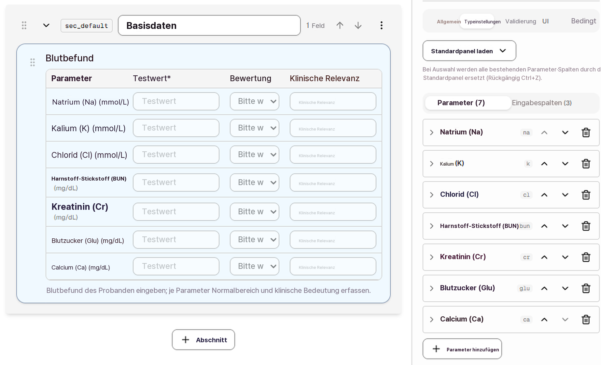
Standardpanel laden — wenn Sie eine Gruppe aus der Liste wählen, wird sie sofort angewendet.
Die Parameterkarten werden durch 7 ersetzt. Bei jedem Parameter sind Code · Anzeigename · Einheit bereits ausgefüllt.
Auch auf dem Canvas werden 7 Zeilen auf einmal gezeichnet. Der Spaltenaufbau bleibt unverändert.
Parameter (7) — die Anzahl hat sich geändert. Eingabespalten (3) bleibt unverändert.
Hinweis — „Bei Auswahl werden alle bestehenden Parameter·Spalten durch das Standardpanel ersetzt (Rückgängig Ctrl+Z).“ ⚠ Er weist darauf hin, dass auch die Spalten ersetzt werden.
Zu beachten
Unbedingt prüfen Datenschäden · Formular nicht abschließbar
- • ⛔ Laden Sie kein Standardpanel, nachdem Sie mit viel Aufwand etwas erstellt haben. Nicht nur die Parameter, sondern auch die Eingabespalten werden vollständig ersetzt — auch ein selbst erstellter Spaltenaufbau geht verloren. 3.5
- • Haben Sie versehentlich geladen, drücken Sie sofort Ctrl+Z. Wie der Bildschirmhinweis angibt, lässt sich der Vorgang rückgängig machen; haben Sie jedoch inzwischen etwas anderes getan, macht Rückgängig auch diesen Vorgang mit rückgängig, daher ist sofortiges Handeln sicherer.
Leicht missverständliches Verhalten
- • Passen Sie das geladene Panel an die Studie an. Die Standardgruppe ist nur ein Ausgangspunkt; Parameter, die nicht durchgeführt werden, mit 🗑 zu löschen, ist für den Erfasser eindeutiger. 3.4
- • Prüfen Sie, ob Einheiten und Codes den Vorgaben der Studie entsprechen. Meldet das Labor in einer anderen Einheit, muss das Einheitenfeld korrigiert werden — das System prüft Einheiten nicht. 2.3 · 3.2
3.7Automatische Bewertung nach Normalbereich — drei Slots festlegen
Überblick
Funktion, die den Testwert mit dem Normalbereich vergleicht und die Bewertung automatisch einträgt. Diese Einstellung gibt es nur beim Untersuchungspanel; zur Verwendung müssen drei Dinge festgelegt werden — der Wert welcher Spalte herangezogen wird, in welche Spalte die Bewertung geschrieben wird und nach dem Alter zu welchem Zeitpunkt der Bereich gewählt wird. Der Normalbereich selbst befindet sich nicht hier, sondern im Bildschirm „LAB-Normalbereich“.
Bildschirmbeschreibung
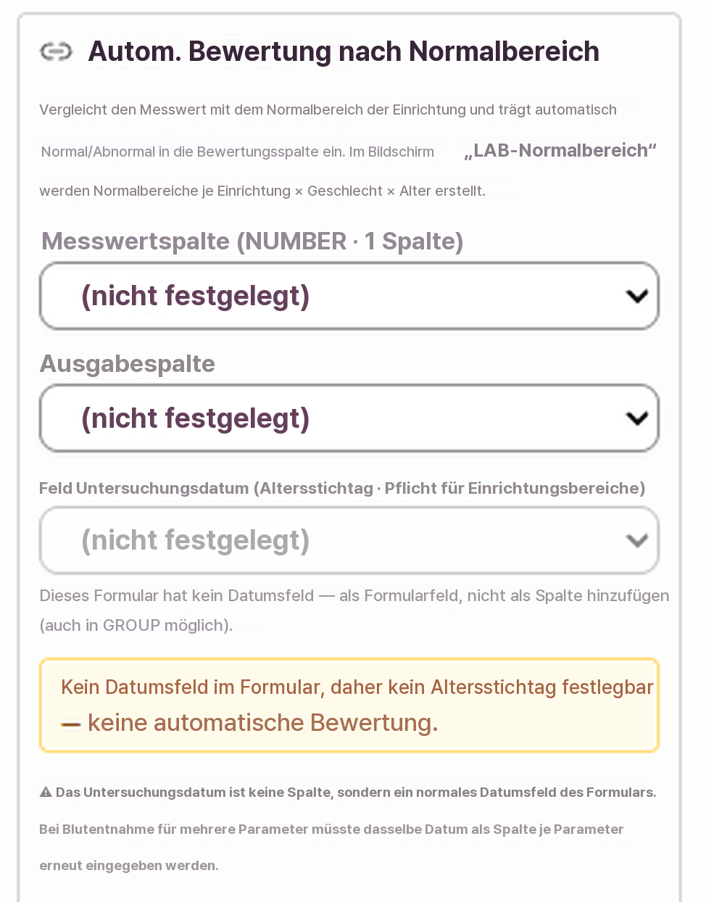
Messwertspalte (NUMBER · 1 Spalte) — die Spalte, auf der die Bewertung beruht. Nur Zahlenspalten können gewählt werden; Nur-Anzeige-Spalten sind ausgeschlossen. 3.5
Bewertungs-Ausgabespalte — die Spalte, in die das Bewertungsergebnis geschrieben wird. Wählbar sind eine Textspalte oder eine Auswahlspalte.
Feld Untersuchungsdatum — das Bezugsdatum für die Altersberechnung. ⚠ Gewählt wird keine Spalte der Tabelle, sondern ein Datumsfeld im Formular. In der Aufnahme gibt es kein solches Feld, daher ist es inaktiv.
Blocktitel „Automatische Bewertung nach Normalbereich festlegen“ — mit einem 🔗-Symbol.
Hinweis — „Vergleicht den Messwert mit dem Normalbereich der Einrichtung und trägt automatisch Normal/Abnormal in die Bewertungsspalte ein. Im Bildschirm „LAB-Normalbereich“ werden Normalbereiche je Einrichtung × Geschlecht × Alter erstellt.“
⚠ Warnung — „Kein Datumsfeld im Formular, daher kein Altersstichtag festlegbar — keine automatische Bewertung.“ In diesem Zustand wird keine einzige Bewertung eingetragen.
⚠ Hinweis — „Das Untersuchungsdatum ist keine Spalte, sondern ein normales Datumsfeld des Formulars. Bei Blutentnahme für mehrere Parameter müsste dasselbe Datum als Spalte je Parameter erneut eingegeben werden.“
Zu beachten
Unbedingt prüfen Datenschäden · Formular nicht abschließbar
- • ⛔ Ohne Feld Untersuchungsdatum funktioniert die automatische Bewertung überhaupt nicht. Da die Normalbereiche nach Altersgruppen erstellt sind, kann ohne bekanntes Alter kein Bereich gewählt werden — fügen Sie dem Formular zuerst ein Datumsfeld hinzu, wenn Sie die automatische Bewertung verwenden möchten.
- • ⛔ Legen Sie das Untersuchungsdatum nicht als Spalte der Tabelle an. Werden mit einer Blutentnahme sieben Parameter untersucht, müsste dasselbe Datum siebenmal eingegeben werden — deshalb sind Spalten von vornherein nicht wählbar. Ein Datumsfeld kann auch gewählt werden, wenn es sich in einer Feldgruppe befindet. 3.6
Leicht missverständliches Verhalten
- • Der Normalbereich befindet sich nicht in diesem Bildschirm. Er wird je Einrichtung · Geschlecht · Alter im Bildschirm „LAB-Normalbereich“ erstellt; hier wird nur festgelegt, welche Spalte verwendet wird. 3.2
- • Die automatische Bewertung ist eine optionale Funktion. Wenn Sie sie nicht verwenden, lassen Sie die drei Slots auf (nicht festgelegt); die Bewertung trägt dann der Erfasser selbst ein. 3.5
3.8Automatische Bewertung nach Normalbereich — Bewertungswert-Zuordnung und Speichern
Überblick
Wenn Sie die Slots wählen, folgen darunter Bewertungswert-Zuordnung und [Festlegung speichern]. Die Zuordnung ist die Einstellung, die die vom System verwendeten Bewertungstoken (NORMAL · LOW · HIGH) in die von diesem Formular verwendeten Werte umsetzt. ⚠ Allerdings ist in der Aufnahme die falsche Bewertungs-Ausgabespalte gewählt — lesen Sie die Beschreibung und die Hinweise unten.
Bildschirmbeschreibung
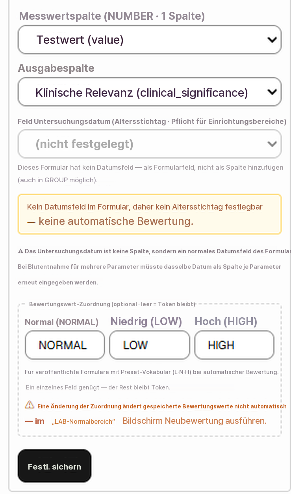
Messwertspalte = Testwert (value) — die richtige Festlegung. Es muss eine Zahlenspalte sein. 3.5
Bewertungs-Ausgabespalte = Klinische Relevanz (clinical_significance) — ⚠ Das ist der Fehler. „Klinische Relevanz“ ist ein Feld, in das der Erfasser frei formuliert, und die automatische Bewertung überschreibt diesen Text. Richtig ist die Spalte „Bewertung“.
Bewertungswert-Zuordnung (optional) — drei Felder: Normal (NORMAL) · Niedrig (LOW) · Hoch (HIGH). Bleiben sie leer, wird das Systemtoken unverändert gespeichert; ist etwas eingetragen, wird stattdessen dieser Wert gespeichert (z. B. wenn die Optionen der Bewertungsspalte N·L·H sind, tragen Sie diese ein).
[Festlegung speichern] — ⚠ unabhängig vom Speichern des Formulars. Erst mit dieser Schaltfläche wird die Festlegung der automatischen Bewertung gespeichert.
Hinweis — „Für veröffentlichte Formulare mit Preset-Vokabular (L·N·H) bei automatischer Bewertung. Ein einzelnes Feld genügt — der Rest bleibt Token.“
⚠ Warnung — „Eine Änderung der Zuordnung ändert gespeicherte Bewertungswerte nicht automatisch — im „LAB-Normalbereich“ Bildschirm Neubewertung ausführen.“
Zu beachten
Unbedingt prüfen Datenschäden · Formular nicht abschließbar
- • ⛔ Wählen Sie kein Freitextfeld als Bewertungs-Ausgabespalte. Das System akzeptiert jede Textspalte und verhindert es daher nicht, aber sobald die automatische Bewertung eingetragen wird, geht der vom Erfasser geschriebene Befund verloren. Wählen Sie die Spalte „Bewertung“.
- • Ist die Spalte „Bewertung“ eine Auswahl, müssen die Optionen alle drei Werte enthalten. Fehlt auch nur einer von Normal · Niedrig · Hoch, wird die Festlegung abgelehnt — mit den zwei Optionen Normal · Abnormal des Standardaufbaus lässt sie sich nicht aktivieren. 3.5
- • ⛔ Ohne Klick auf [Festlegung speichern] wird nichts angewendet. Auch beim Speichern des Formulars wird diese Festlegung nicht mitgespeichert — klicken Sie unbedingt darauf, bevor Sie den Bildschirm verlassen.
Leicht missverständliches Verhalten
- • Eine Änderung der Zuordnung lässt frühere Werte unverändert. Um bereits gespeicherte Bewertungen anzupassen, muss im Bildschirm „LAB-Normalbereich“ eine Neubewertung ausgeführt werden.
Tab „Validierung“ — Wertprüfung vor dem Speichern
- 4.1Ohne Validierungsregeln
- 4.2Regel hinzufügen
- 4.3Fertig erstellte Regel — Vergleich mit anderem Feld
4.1Ohne Validierungsregeln
Überblick
Tab, in dem Regeln gesammelt werden, die vor dem Speichern prüfen, ob ein Wert die Bedingungen erfüllt. Beim Untersuchungspanel ist dieser Tab nur eingeschränkt nutzbar — da der Wert der Tabelle ein Bündel aus mehreren Zeilen ist, sind Größen- oder Formatprüfungen nicht anwendbar. Wenn Sie den Bereich der Testwerte einschränken möchten, verwenden Sie nicht diesen Tab, sondern „LAB-Normalbereich“ und die automatische Bewertung. 3.7
Bildschirmbeschreibung
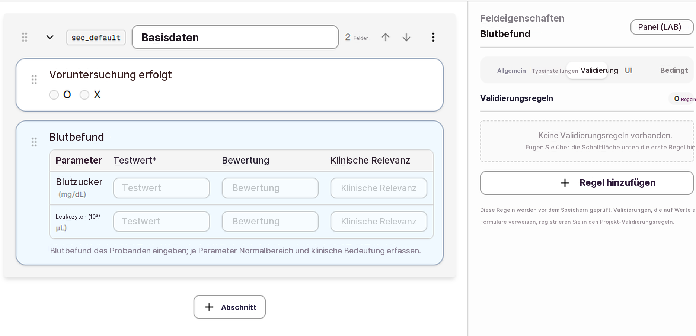
[+ Regel hinzufügen] — erstellt die erste Regel. Der Bildschirm nach der Auswahl wird in 4.2 erläutert.
Bereich Validierungsregeln und Anzahl der registrierten Regeln. Anfangs 0 Regeln.
Ohne Regeln erscheint der Hinweis „Keine Validierungsregeln vorhanden. Fügen Sie über die Schaltfläche unten die erste Regel hinzu.“
Hinweis unten — „Diese Regeln werden vor dem Speichern geprüft. Validierungen, die auf Werte anderer Formulare verweisen, registrieren Sie in den Projekt-Validierungsregeln.“
Zu beachten
Unbedingt prüfen Datenschäden · Formular nicht abschließbar
- • ⛔ Prüfungen je Spalte können in diesem Tab nicht erstellt werden. Für eine Regel wie „Der Testwert muss größer als 0 sein“ gibt es keinen Platz — die Regeln dieses Tabs betrachten die gesamte Tabelle als einen Wert. In den Spalten steuerbar sind nur Eingabeart und Pflicht. 3.5
- • ⛔ Validierungen, die auf Werte anderer Formulare verweisen, können hier nicht erstellt werden. Solche Regeln registrieren Sie im Bildschirm „Projekt-Validierungsregeln“ — allerdings kann das Untersuchungspanel auch dort nicht als Referenzziel gewählt werden. 7.2
Leicht missverständliches Verhalten
- • Behandeln Sie den zulässigen Bereich der Testwerte über die automatische Bewertung. Anders als ein Blockieren per Validierungsregel kann die automatische Bewertung je nach Einrichtung · Geschlecht · Alter unterschiedliche Bereiche verwenden, und Werte außerhalb des Bereichs werden zwar erfasst, aber als abnormal gekennzeichnet. 3.7
- • In der Aufnahme gibt es zwei Felder der obersten Ebene: „Voruntersuchung erfolgt“ (Einzelauswahl) und „Blutbefund“ — von der Antwort im ersten Feld hängt ab, ob die Tabelle erfasst wird; daher wird in 4.3 eine Regel erstellt, die beide Felder verknüpft.
4.2Regel hinzufügen
Überblick
Wenn Sie in 4.1 [+ Regel hinzufügen] wählen, wird der Block Regel 1 erstellt. Anfangs ist „Wertebereich“ eingestellt, doch der Wert der Tabelle ist ein Bündel aus Zeilen, daher ist ein Größenvergleich nicht anwendbar. Ändern Sie auf „Vergleich mit anderem Feld“ — die einzige Art, die bei der Tabelle verwendbar ist. 4.3
Bildschirmbeschreibung
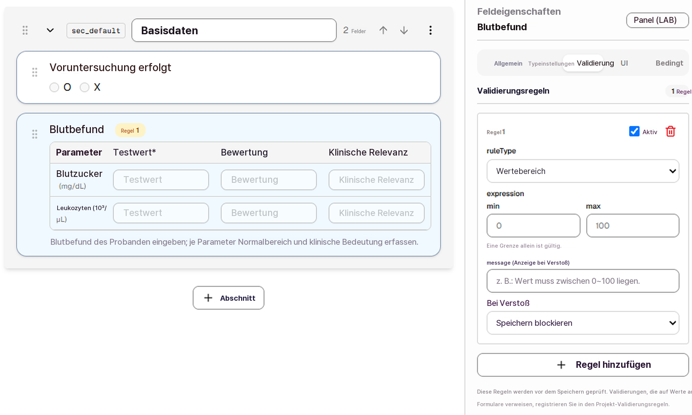
[+ Regel hinzufügen] — erstellt eine weitere Regel. (Dieselbe Schaltfläche, die Sie in 4.1 gewählt haben.)
Neben dem Tabellentitel auf dem Canvas erscheint das Badge „Regel 1“.
Die Regelanzahl ändert sich auf 1 Regel.
Checkbox Aktiv und Symbol Löschen — Sie können die Regel vorübergehend aussetzen, ohne sie zu löschen.
ruleType — die Art der Regel. Direkt nach dem Erstellen ist „Wertebereich“ eingestellt; ändern Sie sie daher unbedingt auf „Vergleich mit anderem Feld“.
min — das Feld für die Untergrenze, das bei Auswahl von Wertebereich erscheint.
max — das Feld für die Obergrenze, das unter derselben Bedingung erscheint.
message (Anzeige bei Verstoß) — der Text, der Benutzern bei einem Regelverstoß angezeigt wird.
Bei Verstoß — Wählen Sie Speichern blockieren oder Warnung. (Je nach ruleType ist die Auswahl teils nicht möglich — 4.3)
Die hellgrauen 0 · 100 und „Eine Grenze allein ist gültig.“ sind Hinweise zum Wertebereich und keine eingestellten Werte.
Zu beachten
Unbedingt prüfen Datenschäden · Formular nicht abschließbar
- • ⛔ Tragen Sie den Normalbereich der Testwerte nicht hier ein. min · max betrachten die gesamte Tabelle als einen Wert, und da die Tabelle keine Zahl ist, passiert nichts — da auch kein Fehler erscheint, glaubt man, eine Regel festgelegt zu haben, und übersieht es. Behandeln Sie Bereiche über die automatische Bewertung. 3.7
- • ⛔ Wird „Format (regulärer Ausdruck)“ auf die Tabelle angewendet, bleibt das Speichern dauerhaft blockiert. Der reguläre Ausdruck prüft das gesamte Zeilenbündel, nachdem es in eine feste interne Zeichenkette umgewandelt wurde; welcher Ausdruck auch verwendet wird, sobald auch nur ein Wert eingegeben ist, liegt ein Verstoß vor.
- • ⛔ Auch „Dezimalstellen“ funktioniert nicht. Selbst wenn Sie die Nachkommastellen der Testwerte begrenzen möchten, erreicht dieser Tab die Spalten nicht. 4.1
- • Bleibt message leer, wissen Benutzer nicht, warum gesperrt wurde. Geben Sie unbedingt einen Text ein.
4.3Fertig erstellte Regel — Vergleich mit anderem Feld
Überblick
Wenn Sie ruleType auf Vergleich mit anderem Feld ändern, wird mit dem Wert eines anderen Felds desselben Formulars verglichen. Beziehungen wie „Ergebnisse nur erfassen, wenn eine Voruntersuchung angegeben wurde“ lassen sich so abbilden; es ist die einzige Regel, die bei der Tabelle korrekt funktioniert. ⚠ Achten Sie auf die Anzahl der Elemente im Bildschirmhinweis — darin zeigt sich die Eigenschaft dieses Typs.
Bildschirmbeschreibung
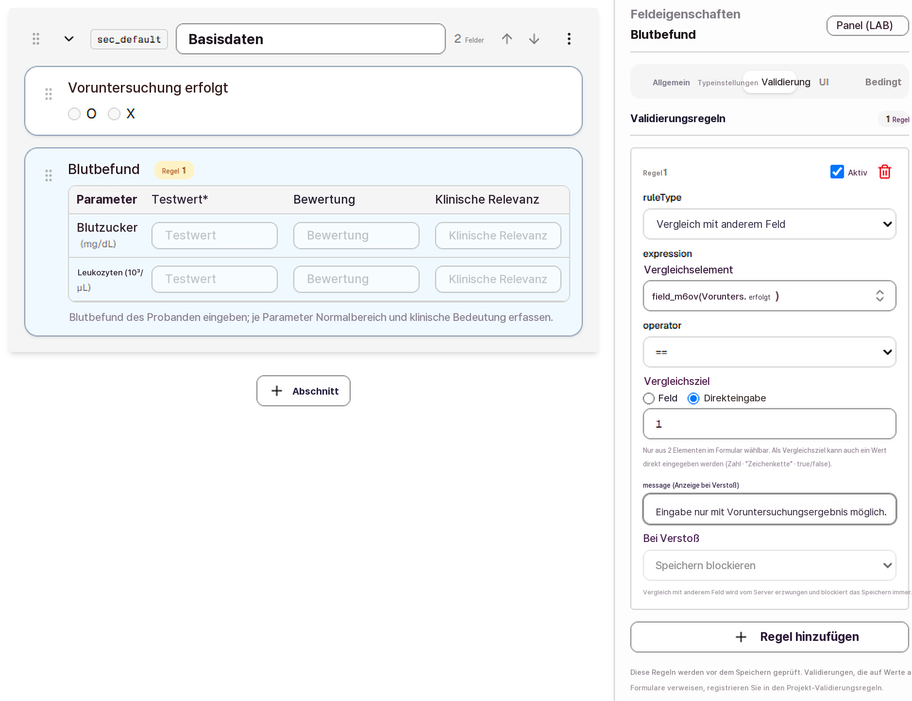
1 istruleType = Vergleich mit anderem Feld — Wenn ausgewählt, werden die Felder darunter für den Vergleich umgestellt.
Vergleichselement — in der Aufnahme field_m6ov(Voruntersuchung erfolgt). ⚠ Wählen Sie nicht die Tabelle selbst.
operator — die Vergleichsart. In der Aufnahme == (gleich).
Vergleichsziel — Wählen Sie zwischen Feld und Direkteingabe. In der Aufnahme wurde per Direkteingabe 1 eingetragen — der gespeicherte Wert von „Voruntersuchung erfolgt“.
message (Anzeige bei Verstoß) — in der Aufnahme Eingabe nur mit Voruntersuchungsergebnis möglich.
Bei Verstoß — grau und inaktiv. Wie der Bildschirmhinweis sagt: „Vergleich mit anderem Feld wird vom Server erzwungen und blockiert das Speichern immer.“
Bildschirmhinweis — „Nur aus 2 Elementen im Formular wählbar.“ ⚠ Es gibt zwei Felder der obersten Ebene, und es sind 2 — die Spalten der Tabelle gehören nicht zu den Kandidaten. 7.1
Zu beachten
Unbedingt prüfen Datenschäden · Formular nicht abschließbar
- • ⛔ Wählen Sie nicht die Tabelle selbst als Vergleichselement. Der Wert der Tabelle ist ein Bündel aus Zeilen und kann niemals gleich
1sein; sobald auch nur ein Wert eingegeben ist, liegt ein Verstoß vor, und das Speichern bleibt dauerhaft blockiert. - • ⛔ Als Vergleichsziel wird nicht der Bildschirmtext, sondern der gespeicherte Wert eingetragen. „Voruntersuchung erfolgt“ wird auf dem Bildschirm als
O·Xangezeigt; prüfen Sie daher zuerst in der Optionsliste dieses Felds, ob der gespeicherte Wert tatsächlich1ist. - • Dieselbe Beziehung lässt sich auch mit der bedingten Anzeige 6.2 erstellen. Werden beide festgelegt, entsteht eine Doppelung, bei der gar nicht gefragt und zugleich das Speichern blockiert wird; verwenden Sie daher nur eine davon. 6.1
Leicht missverständliches Verhalten
- • Auf die Spalten der Tabelle kann von anderen Feldern nicht verwiesen werden. Spalten sind Elemente, die nur innerhalb der Tabelle existieren, und erscheinen daher nicht in den Listen der Validierungsregeln und der bedingten Anzeige — im Gegensatz zu den Mitgliedern einer Feldgruppe, die in der Liste erscheinen. 7.1
Tab „UI“ — Bildschirmanordnung und Hinweistexte
- 5.1Gesamtaufbau des Tabs „UI“
- 5.2Layoutbreite
- 5.3Schreibgeschützt · Ausblenden
- 5.4placeholder · helpText
5.1Gesamtaufbau
Überblick
Tab, in dem nicht der Wert selbst, sondern Anordnung und Hinweise auf dem Bildschirm festgelegt werden. Die Einstellungen dieses Tabs ändern die gespeicherten Daten selbst nicht. Beim Untersuchungspanel ist die Layoutbreite besonders wichtig — als Tabelle mit vier oder mehr Spalten gerät sie bei geringerer Breite als Erstes aus der Form. 5.2
Bildschirmbeschreibung
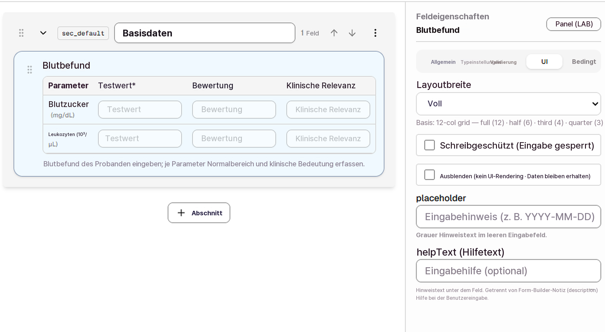
Layoutbreite — die Breite, die diese Tabelle in einer Zeile des Formulars einnimmt. 5.2
Schreibgeschützt (Eingabe gesperrt) — zeigt das Feld an, verhindert aber Änderungen. 5.3
Ausblenden (kein UI-Rendering · Daten bleiben erhalten) — blendet auf dem Bildschirm aus. Die gesamte Tabelle verschwindet. 5.3
placeholder — wird beim Untersuchungspanel nicht angewendet. Als Hinweistext in den Zellen wird der Spaltenname unverändert verwendet, daher kann er hier nicht geändert werden. 5.4
helpText (Hilfetext) — Hinweistext, der unter der Tabelle angezeigt wird. Dieser funktioniert normal. 5.4
Typ-Badge „Untersuchungspanel (LAB)“
Zu beachten
Unbedingt prüfen Datenschäden · Formular nicht abschließbar
- • ⛔ Eine Eingabe in placeholder ändert den Bildschirm nicht. Die in den Zellen sichtbaren „Testwert“ · „Bewertung“ · „Klinische Relevanz“ sind Spaltennamen — um sie zu ändern, korrigieren Sie das label der Spalte im Tab „Typeinstellungen“. 3.5 · 5.4
- • ⛔ Ausblenden löscht gespeicherte Werte nicht. Sie werden nur auf dem Bildschirm verborgen; die Werte bleiben erhalten und sind in Export und Audit-Trail enthalten. 5.3
Leicht missverständliches Verhalten
- • Die Einstellungen in diesem Tab ändern gespeicherte Werte nicht. Nur Anordnung und Hinweise ändern sich.
Hinweis
- • Verwenden Sie Schreibgeschützt und Ausblenden nicht zusammen. Ausblenden hat Vorrang, die Einstellung Schreibgeschützt bleibt dann wirkungslos. 5.3
5.2Layoutbreite
Überblick
Legt die eingenommene Breite dieser Tabelle in einer Zeile des Formulars fest. Das Untersuchungspanel hat mit Parameterspalte + 3 Eingabespalten mindestens vier Zellen und ist damit empfindlicher gegenüber der Breite als jeder bisher behandelte Typ.
Bildschirmbeschreibung
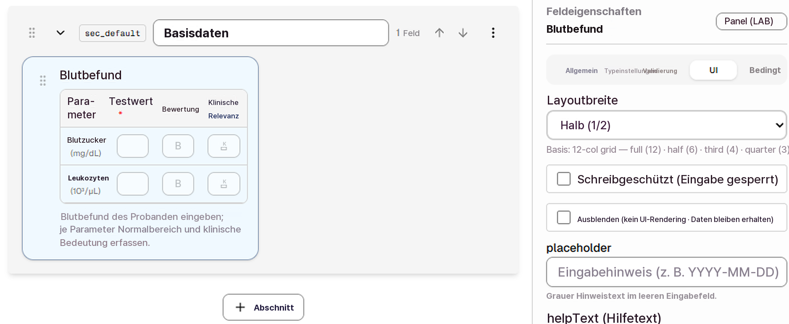
Layoutbreite — Wählen Sie zwischen Voll · Halb (1/2) · 1/3 · 1/4.
Da die Tabelle auf halbe Breite schrumpft, brechen alle Spaltenköpfe in zwei Zeilen um, und die Hinweistexte der Zellen werden wie B · K auf einen Buchstaben abgeschnitten. Es ist überhaupt nicht erkennbar, um welches Feld es sich handelt.
Basis: 12-col grid — wie der Bildschirmhinweis sagt: „full (12) · half (6) · third (4) · quarter (3)“. Die Tabelle teilt diese Breite noch einmal durch die Anzahl der Spalten, daher wirkt sie deutlich schmaler.
Zu beachten
Unbedingt prüfen Datenschäden · Formular nicht abschließbar
- • ⛔ Lassen Sie das Untersuchungspanel unbedingt auf voller Breite. Schon bei halber Breite werden die Zelltexte auf einen Buchstaben abgeschnitten — bei 1/3 · 1/4 ist die Tabelle nicht mehr verwendbar.
- • ⛔ Je mehr Spalten, desto schneller gerät die Tabelle aus der Form. Kommen Nur-Anzeige-Spalten hinzu und sind es fünf oder mehr, kann es selbst bei voller Breite eng werden; behalten Sie nur die wirklich nötigen Spalten. 3.5
Leicht missverständliches Verhalten
- • Abgeschnitten ist nur der Hinweistext; die Funktion der Felder bleibt unverändert. Eingabe und Speichern funktionieren normal, die Felder sehen nur schmal aus — gerade deshalb fällt es schwerer auf.
Hinweis
- • Ohne Angabe gilt die volle Breite.
5.3Schreibgeschützt · Ausblenden
Überblick
Einstellungen, mit denen die Tabelle angezeigt, aber nicht geändert werden kann, oder auf dem Bildschirm verborgen wird, wobei der Wert erhalten bleibt. Beide löschen gespeicherte Werte nicht und gelten für die gesamte Tabelle — eine Einstellung, die nur bestimmte Parameter oder Spalten sperrt oder ausblendet, gibt es nicht.
Bildschirmbeschreibung
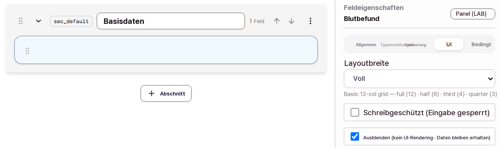
Schreibgeschützt (Eingabe gesperrt) — Wenn aktiviert, wird die Tabelle angezeigt, kann vom Erfasser aber nicht korrigiert werden. Alle Zeilen und Spalten sind gesperrt.
Ausblenden (kein UI-Rendering · Daten bleiben erhalten) — Wenn aktiviert, wird diese Tabelle in der Eingabemaske nicht angezeigt.
Von der Karte auf dem Canvas bleibt nur ein leerer Rahmen. Weder Titel noch Tabelle werden angezeigt.
Layoutbreite — der in 5.2 eingestellte Wert.
Zu beachten
Unbedingt prüfen Datenschäden · Formular nicht abschließbar
- • ⛔ Verbergen Sie falsch eingegebene Testwerte nicht mit Ausblenden. Die Werte bleiben erhalten und sind in Export und Audit-Trail enthalten — Werte, die korrigiert werden müssen, sind zu korrigieren, nicht zu verbergen. 4.3
- • ⛔ Wird eine Tabelle mit automatischer Bewertung ausgeblendet, ist auch die Bewertung nicht sichtbar. Werte und Bewertung bleiben erhalten, aber der Erfasser kann sie nicht prüfen; es ist besser, sie per bedingter Anzeige situationsabhängig auszublenden. 3.7 · Kap. 6
Leicht missverständliches Verhalten
- • Schreibgeschützt ist nützlich, um externe Untersuchungsergebnisse anzuzeigen. Geeignet, wenn aus dem Laborsystem übernommene Werte nur geprüft werden sollen — verwenden Sie es nicht in Formularen, in die der Erfasser selbst überträgt.
Hinweis
- • Werden Ausblenden und Schreibgeschützt zusammen gewählt, hat Ausblenden Vorrang.
5.4placeholder · helpText
Überblick
Legt die Hinweistexte in und unter dem Eingabefeld fest. Beim Untersuchungspanel trennen sich die Wege der beiden Elemente — helpText funktioniert normal, placeholder wird jedoch nicht angewendet. Die Aufnahme ist der Beleg dafür.
Bildschirmbeschreibung
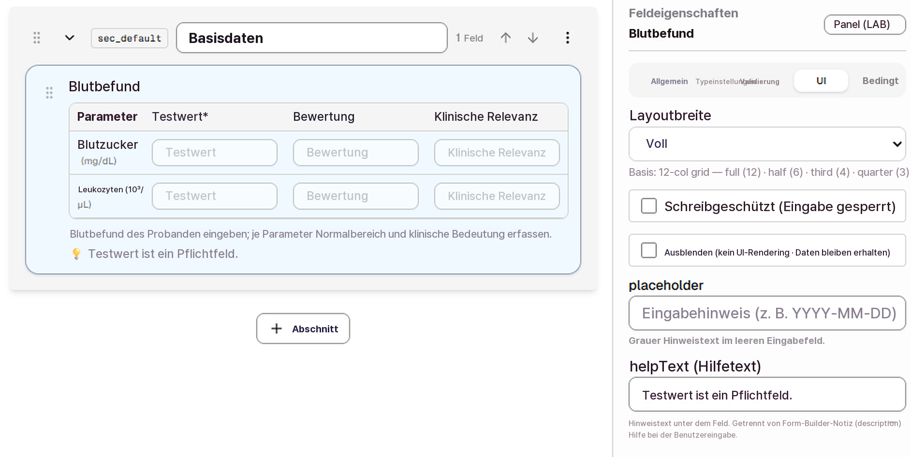
placeholder — blasse Schrift, die im Eingabefeld angezeigt wird, solange kein Wert vorhanden ist. In der Aufnahme ist er leer; zu sehen ist nur der Hinweistext „Eingabehinweis (z. B. YYYY-MM-DD)“.
Trotzdem sind in den Zellen der Tabelle „Testwert“ · „Bewertung“ · „Klinische Relevanz“ bereits angezeigt. Dieser Text ist nicht der placeholder, sondern der unverändert verwendete Spaltenname (label); um ihn zu ändern, muss das label der Spalte im Tab „Typeinstellungen“ korrigiert werden. 3.5
helpText (Hilfetext) — Hinweistext, der unter der Tabelle angezeigt wird. In der Aufnahme: „Testwert ist ein Pflichtfeld.“
Erscheint unter der Tabelle zusammen mit dem Symbol 💡. Dieser funktioniert normal.
description (Hilfetext) — der in 2.1 eingegebene Text. Er ist ein anderes Element als helpText und wird ohne Symbol in der Zeile darüber angezeigt.
Zu beachten
Unbedingt prüfen Datenschäden · Formular nicht abschließbar
- • ⛔ Text in placeholder wird nirgends angezeigt. Der Hinweis in den Zellen ist der Spaltenname und kann über dieses Feld nicht geändert werden — tragen Sie ihn hier ein, erreicht der vermeintlich eingestellte Hinweis den Erfasser nicht. 5.1
- • Tragen Sie Einheitenhinweise im Feld unit des Parameters ein. Da die Einheit je Parameter verschieden ist, kann sie nicht über den helpText vermittelt werden, der für die gesamte Tabelle gilt. 3.2
Leicht missverständliches Verhalten
- • Hinweise zur gesamten Tabelle tragen Sie in helpText ein. Schreiben Sie wie in der Aufnahme „Testwert ist ein Pflichtfeld.“, wird es als Hinweis gelesen, der für alle Zeilen gilt — da es per Validierung nicht erzwungen werden kann 4.1 · 4.2, ist dieser Text das einzige Steuerungsmittel.
- • description und helpText werden zusammen angezeigt. Wenn Sie beide eingeben, entstehen zwei Zeilen; schreiben Sie daher nicht zweimal denselben Inhalt. 2.1
Tab „Bedingt“ — Anzeige abhängig von anderen Werten
- 6.1Bedingte Anzeige aktivieren
- 6.2Bedingung festlegen
6.1Bedingte Anzeige aktivieren
Überblick
Funktion, mit der diese Tabelle abhängig vom Wert eines anderen Felds angezeigt oder ausgeblendet wird. Sie passt besonders gut zum Untersuchungspanel — denn Visiten, bei denen keine Untersuchung durchgeführt wird, sind häufig. Wenn Sie vorher nach der Durchführung fragen und die Tabelle an diese Antwort knüpfen, können Sie eine leere Tabelle von einer fehlenden Eingabe unterscheiden. 2.2
Bildschirmbeschreibung
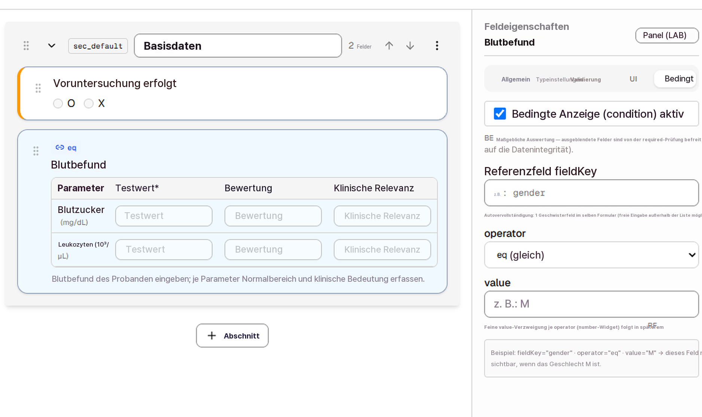
Bedingte Anzeige (condition) aktiv — Wenn aktiviert, werden die folgenden Bedingungseinstellungen angezeigt.
Über der Tabelle auf dem Canvas erscheint das Badge 🔗 eq und zeigt an, dass eine Bedingung angewendet wird.
Referenzfeld fieldKey — ein anderes Feld im selben Formular, das als Grundlage der Bedingung dient. ⚠ Wie der Bildschirmhinweis „Autovervollständigung: 1 Geschwisterfeld im selben Formular“ zeigt, gehören die Spalten der Tabelle nicht zu den Kandidaten. 4.3
operator — die Vergleichsart. Standard ist eq (gleich).
value — der Vergleichswert. Geben Sie den gespeicherten Wert des Referenzfelds ein. 6.2
⚠ Bildschirmhinweis — „ausgeblendete Felder sind von der required-Prüfung befreit (Auswirkung auf die Datenintegrität).“ Die Bedingung wird vom System ausgewertet.
Beispiel unten — fieldKey="gender" · operator="eq" · value="M" → dieses Feld nur sichtbar, wenn das Geschlecht M ist.
Zu beachten
Unbedingt prüfen Datenschäden · Formular nicht abschließbar
- • ⛔ Wird eine Bedingung festgelegt, entfällt die Pflichtprüfung. Solange die Tabelle verborgen ist, weil die Bedingung nicht zutrifft, wird das Formular auch bei einem Pflichtfeld im leeren Zustand abgeschlossen. 2.2
- • ⛔ Wird die Bedingung falsch, nachdem bereits Werte eingegeben wurden, verschwindet die Tabelle vom Bildschirm. Die Werte bleiben erhalten; wurde die Antwort auf die vorherige Frage später geändert, müssen die verbliebenen Werte daher separat gelöscht werden. 5.3
Leicht missverständliches Verhalten
- • Fragen Sie die Tabelle bei Visiten ohne Untersuchung nicht ab. Wenn Sie eine Ja/Nein-Frage voranstellen und diese Tabelle als Bedingung daran knüpfen, ist die Tabelle bei nicht zutreffenden Visiten nicht sichtbar, und eine leere Tabelle lässt sich von einer fehlenden Eingabe unterscheiden. 2.2
Hinweis
- • Wenn Sie die Bedingung aktivieren und das Referenzfeld leer lassen, ist die Bedingung nicht erfüllt. Geben Sie unbedingt ②~④ vollständig ein. 6.2
6.2Bedingung festlegen
Überblick
Die in 6.1 aktivierte Bedingung ist vollständig eingegeben. Mit dieser Einstellung wird die Tabelle nur angezeigt, wenn der Wert von „Voruntersuchung erfolgt“ 1 ist. Es wird dasselbe Referenzfeld wie bei der Validierungsregel in 4.3 verwendet, aber statt das Speichern zu blockieren, wird gar nicht erst gefragt.
Bildschirmbeschreibung
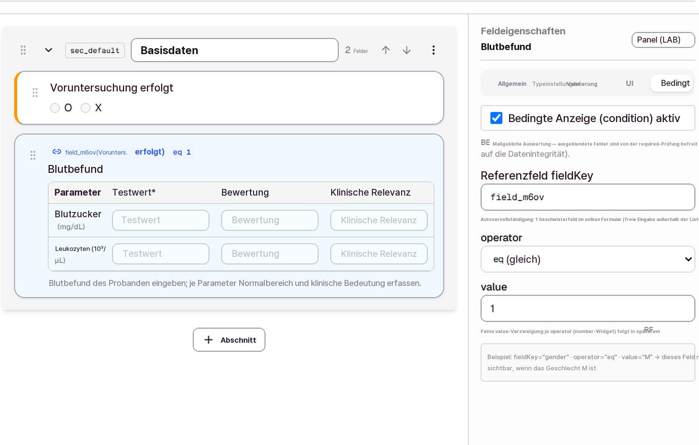
Voruntersuchung erfolgt 1 istReferenzfeld fieldKey = field_m6ov — verweist auf das Feld „Voruntersuchung erfolgt“ im selben Formular. Es ist dasselbe Feld wie bei der Validierungsregel in 4.3.
Ergebnis nach Eingabe von ①~③ — das Badge auf dem Canvas wird zu 🔗 field_m6ov(Voruntersuchung erfolgt) eq 1 konkretisiert.
operator = eq (gleich)
value = 1 — geben Sie nicht das auf dem Bildschirm sichtbare O, sondern den gespeicherten Wert dieser Option ein.
⚠ Bildschirmhinweis — „ausgeblendete Felder sind von der required-Prüfung befreit (Auswirkung auf die Datenintegrität).“
Beispiel unten — fieldKey="gender" · operator="eq" · value="M" → dieses Feld nur sichtbar, wenn das Geschlecht M ist.
Zu beachten
Unbedingt prüfen Datenschäden · Formular nicht abschließbar
- • ⛔ In value wird nicht der Bildschirmtext, sondern der gespeicherte Wert eingegeben. Wenn Sie
Oeintragen, weil „Voruntersuchung erfolgt“ auf dem Bildschirm alsO·Xerscheint, ist die Bedingung nicht erfüllt, und die Tabelle wird niemals angezeigt. Prüfen Sie den gespeicherten Wert zuerst in der Optionsliste des referenzierten Felds. - • ⛔ Wird der gespeicherte Wert des Referenzfelds geändert, bricht die Bedingung unbemerkt. Ändern Sie den gespeicherten Wert von
1aufY, ist diese Bedingung ohne Fehlermeldung einfach nicht mehr erfüllt — deshalb ist eine Änderung gespeicherter Werte nach der Veröffentlichung riskant.
Leicht missverständliches Verhalten
- • Die automatische Bewertung läuft nicht, solange die Tabelle verborgen ist. Das ist selbstverständlich, da kein Wert vorhanden ist; wird die Bedingung später wahr, werden ab den dann eingegebenen Werten Bewertungen eingetragen. 3.7
- • Prüfen Sie die Einstellung anschließend in der Vorschau. Ändern Sie den Bezugswert und prüfen Sie, ob die Tabelle tatsächlich erscheint und verschwindet.
Anhang
- 7.1Einstellungen je Tab auf einen Blick
- 7.2Unbedingt merken · Nicht behandelt
7.1Einstellungen je Tab auf einen Blick
Einstellungen je Tab
| Tab | Element | Was wird festgelegt | Abschnitt |
|---|---|---|---|
| Allgemein | fieldKey | Ein einziger Schlüssel, unter dem die gesamte Tabelle gespeichert wird (nach dem Speichern nicht ändern) | 2.1 |
| label (Anzeigename) | Titel über der Tabelle — Untersuchungszeitpunkt erkennbar machen | 2.1 | |
| description (Hilfetext) | Ergänzende Beschreibung unter der Tabelle — Hinweis, wo das Blutentnahmedatum einzutragen ist | 2.1 | |
| Pflichtfeld | Ob mindestens 1 tatsächlich ausgefüllte Zeile nötig ist — unberührte Zeilen ausgenommen | 2.2 | |
| SDV-Verifizierung | CRA-Quelldatenabgleich — der einzige Schritt, in dem automatische Bewertung und Einheit geprüft werden | 2.3 | |
| Typeinstellungen | Standardpanel laden | ⚠ Ersetzt Parameter·Spalten vollständig (nur zu Beginn der Erstellung) | 3.6 |
| itemCode | Speichercode des Parameters (snake_case · keine Duplikate · vor Veröffentlichung festlegen) | 3.2 · 3.3 | |
| itemLabel · unit | Anzeigename und Einheit im Zeilenkopf — ⚠ Einheiten werden nicht geprüft | 3.2 · 3.4 | |
| (Normalbereich) | ⚠ Nicht in diesem Bildschirm — in „LAB-Normalbereich“ je Einrichtung × Geschlecht × Alter | 3.2 · 3.7 | |
| Spalte fieldType · fieldKey · label | Eingabeart · Speicherschlüssel · Spaltenkopf der Spalte (5 Arten: TEXT·NUMBER·SELECT·DATE·BOOLEAN) | 3.5 | |
| Spalte required · Nur Anzeige | Pflichtangabe · Spalte mit festem Text ohne Werterfassung (beide nicht gleichzeitig festlegbar) | 3.5 | |
| Automatische Bewertung — drei Slots | Messwertspalte (NUMBER) · Bewertungs-Ausgabespalte · Feld Untersuchungsdatum (Datumsfeld des Formulars) | 3.7 | |
| Automatische Bewertung — Zuordnung · Speichern | NORMAL·LOW·HIGH in Werte dieses Formulars · ⚠ [Festlegung speichern] separat | 3.8 | |
| Validierung | ruleType | Nur „Vergleich mit anderem Feld“ funktioniert — Bereiche über die automatische Bewertung | 4.2 · 4.3 |
| Wertebereich · Format · Dezimalstellen | ⛔ Wirkungslos oder blockiert das Speichern — nicht verwenden | 4.2 | |
| Vergleichselement | ⛔ Bei Auswahl der Tabelle selbst wird das Speichern blockiert · Spalten sind keine Kandidaten | 4.3 | |
| UI | Layoutbreite | ⚠ Unbedingt Voll — bei Halb werden Zelltexte auf einen Buchstaben abgeschnitten | 5.2 |
| Schreibgeschützt | Anzeigen, aber nicht ändern lassen — geeignet zur Anzeige externer Ergebnisse | 5.3 | |
| Ausblenden | Keine Anzeige auf dem Bildschirm — gespeicherte Werte bleiben erhalten | 5.3 | |
| placeholder · helpText | ⛔ placeholder wird nicht angewendet · nur helpText funktioniert | 5.4 | |
| Bedingt | Bedingung aktiv | Bei Visiten ohne Untersuchung gar nicht erst fragen (Pflichtprüfung entfällt) | 6.1 |
| Referenzfeld fieldKey | Feld desselben Formulars als Grundlage der Bedingung (Spalten sind keine Kandidaten) | 6.2 | |
| operator · value | Vergleichsart und Vergleichswert (gespeicherten Wert eingeben) | 6.2 |
Vergleich der 3 Container — was ist fest und was ist offen?
| Element | Tabelle (GRID) | Feldgruppe (GROUP) | Untersuchungspanel (LAB) |
|---|---|---|---|
| Ausgangszustand | Leerer Hinweis | Leerer Hinweis | Verwendbarer Aufbau enthalten 1.1 |
| Wer legt die Zeilen fest? | Erfasser ([Zeile hinzufügen]) | — (Elemente fest) | Ersteller (Parameter) — Erfasser können keine hinzufügen |
| Verweis auf Unterelemente | Spalten nicht möglich | Mitglieder möglich | Spalten nicht möglich („2 Elemente“ im Hinweis in 4.3) |
| Behandlung leerer Zeilen | Auch leere Zeilen unvollständig | — | Unberührte Zeilen ausgenommen — auch bei teilweiser Durchführung abgeschlossen 2.2 |
| Eigene Funktionen | — | Anzahl Elemente pro Zeile | Standardpanel · automatische Bewertung · Nur-Anzeige-Spalten (3.5~3.8) |
7.2Unbedingt merken · Nicht behandelt
Unbedingt merken
Unbedingt prüfen Datenschäden · Formular nicht abschließbar
- • Für die automatische Bewertung muss das Formular ein Datumsfeld haben. Da die Normalbereiche nach Altersgruppen gelten, wird ohne Untersuchungsdatum keine einzige Bewertung eingetragen. 3.7
- • Wählen Sie kein Freitextfeld wie „Klinische Relevanz“ als Bewertungs-Ausgabespalte. Das System verhindert es nicht, aber der vom Erfasser geschriebene Befund wird überschrieben — wählen Sie die Spalte „Bewertung“. 3.8
- • Die automatische Bewertung wird erst mit [Festlegung speichern] angewendet. Das ist eine vom Speichern des Formulars getrennte Achse. 3.8
- • Standardpanel laden ersetzt nicht nur die Parameter, sondern auch die Eingabespalten vollständig. Verwenden Sie es nur zu Beginn der Erstellung. 3.6
- • Erfasser können keine Zeilen hinzufügen. Nehmen Sie alle zu erfassenden Parameter vollständig auf. 1.1 · 3.4
- • Einheiten werden nicht geprüft. Füllen Sie das Feld unit unbedingt aus und prüfen Sie im SDV-Schritt, ob die Einheit stimmt. 2.3 · 3.2
- • Lassen Sie die Layoutbreite auf Voll. Schon bei Halb werden Zelltexte auf einen Buchstaben abgeschnitten. 5.2
- • Text in placeholder wird nirgends angezeigt. Der Zellhinweis ist der Spaltenname; korrigieren Sie daher das label der Spalte. 3.5 · 5.4
Leicht missverständliches Verhalten
- • Der Normalbereich befindet sich nicht in diesem Bildschirm. Er wird je Einrichtung · Geschlecht · Alter im Bildschirm „LAB-Normalbereich“ erstellt. 3.2 · 3.7
- • Unberührte Zeilen gelten nicht als unvollständig. Eine Situation, in der nur ein Teil der Untersuchungen durchgeführt wurde, kann unverändert erfasst werden. 2.2
- • Behandeln Sie den Bereich der Testwerte nicht über Validierungsregeln, sondern über die automatische Bewertung. Bereiche je Einrichtung·Geschlecht·Alter sind möglich, und auch abweichende Werte werden erfasst. 4.1
Hinweis
- • Die blasse Schrift auf der Karte direkt nach dem Hinzufügen ist ein Beispiel. Sie sieht aus wie die Werte des ersten Parameters, wird aber nicht gespeichert. 3.3
Nicht in diesem Dokument behandelt
※ Bildschirm „LAB-Normalbereich“ (SCR-CRF-015) — ein separater Bildschirm, in dem Normalbereiche je Einrichtung × Geschlecht × Alter erstellt und Neubewertungen ausgeführt werden. Er wird über das linke Menü aufgerufen und liegt außerhalb des Umfangs dieses Handbuchs. 3.2 · 3.7 · 3.8
„Nicht gemessen“ zulassen · AE-Bedeutungsrolle — werden im Tab „Allgemein“ gar nicht angezeigt. Da der Wert aus mehreren Zeilen besteht, sind diese beiden Funktionen nicht anwendbar. Behandeln Sie nicht durchgeführte Untersuchungen über die bedingte Anzeige. 1.1 · 6.1
Standardwert (defaultValue) · Automatische Berechnung (calculation) — im Tab „Typeinstellungen“ nicht vorhanden. Wenn eine Berechnung mit Testwerten nötig ist, legen Sie ein separates Zahlenfeld an. 3.1
Eingabe des festen Texts von Nur-Anzeige-Spalten — wird eine Spalte als Nur Anzeige festgelegt, wird für jeden Parameter separat der anzuzeigende Text eingetragen. Da dieser Bildschirm in den Aufnahmen fehlt, behandelt dieses Handbuch nur die Checkbox zur Festlegung. 3.5
Bearbeiten der Optionen einer Auswahl-Bewertungsspalte — ist die Spalte „Bewertung“ eine Auswahl (SELECT), erscheint ein Editor für die Optionsliste. Da die Spalte „Bewertung“ in der Aufnahme auf Text (TEXT) umgestellt ist und dieser Bildschirm fehlt, wurden in diesem Handbuch nur die Anforderungen in Textform beschrieben. 3.5 · 3.8
Validierungen · Bedingungen mit Verweis auf Spalten — der fieldKey einer Spalte gilt nur innerhalb der Tabelle, daher kann nicht direkt darauf verwiesen werden, weder von Validierungsregeln noch von der bedingten Anzeige anderer Felder. 4.3 · 6.1
Verweis in Projekt-Validierungsregeln — im Bildschirm „Projekt-Validierungsregeln“, der Werte anderer Formulare betrachtet, kann das Untersuchungspanel nicht als Referenzziel gewählt werden. Denn der Wert ist ein Zeilenbündel. 4.1